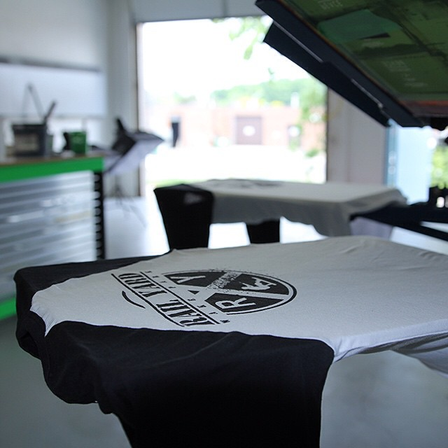

Fasting App
For the past 3 months I've been intermittent fasting. I use this app called "Zero". This app has been incredibly helpful to staying on track.
Using this app every single day, my curious self wants to take this app a part and build a fasting timer from scratch.
Social Media Scheduling App
I use this web application that allows me to schedule instagram content days or even months in advance.
I pay $15 a month to use this service.
One of the advantages of being a front end web developer is being able to build your very own scheduling app.
Shop Management Software
My family owns a small custom t-shirt shop. I'd like to build a shop management software for screen printers, DTG shops, and embroiderers.
We still use pen and paper to manage a lot of our jobs.
I've used other shop management softwares but none of them did what we really needed it to.